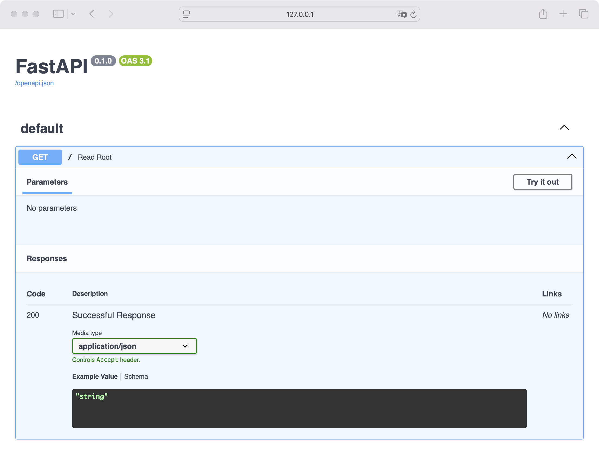

FastAPI es un framework web moderno y de alto rendimiento para construir APIs con Python. Está basado en el empleo de indicadores de tipo (type hints) y estándares abiertos como OpenAPI.
Para desarrollar APIs modernas y robustas con Python, puedes emplear una variedad de frameworks, incluyendo Django REST Framework, Flask, Falcon, entre otros. Sin embargo, FastAPI se ha convertido en una de las opciones más populares y sólidas disponibles gracias a su alto rendimiento y su enfoque en la productividad del desarrollador.
En este tutorial, aprenderás cómo:
- Instalar FastAPI y configurarlo en tu computadora
- Crear tu primera API con un endpoint básico
- Usar parámetros de ruta y parámetros de query para recibir datos
- Validar datos de entrada con modelos Pydantic
- Aprovechar la documentación interactiva automática
Para obtener el máximo de este tutorial, debes conocer lo básico de programación con Python, especialmente temas relacionados con funciones, decoradores y type hints.
Conociendo FastAPI
FastAPI es un web framework moderno y de alto rendimiento para construir APIs con Python 3.9+ basado en los indicadores de tipo estándar (type hints). Sus características principales incluyen:
- Rapidez: Muy alto rendimiento, a la par con NodeJS y Go, gracias a Starlette y Pydantic
- Rápido de programar: Incrementa la velocidad de desarrollo entre 200% y 300%
- Menos errores: Reduce alrededor del 40% de errores inducidos por desarrolladores
- Intuitivo: Gran soporte en editores con autocompletado en todas partes, lo que reduce el tiempo de depuración
- Fácil: Diseñado para ser fácil de usar y aprender, lo que reduce el tiempo leyendo documentación
- Corto: Minimiza la duplicación de código con múltiples funcionalidades para cada declaración de parámetros
- Robusto: Código listo para producción con documentación interactiva automática
- Basado en estándares: Totalmente compatible con los estándares abiertos para APIs, como OpenAPI y JSON Schema
FastAPI se apoya internamente en dos bibliotecas clave: Starlette para la parte web y Pydantic para la validación de datos. Esta combinación le permite alcanzar un rendimiento comparable al de frameworks escritos en Go o NodeJS.
Instalando FastAPI
Para comenzar a trabajar con FastAPI, necesitas instalarlo junto con un servidor ASGI (Asynchronous Server Gateway Interface), como uvicorn, que será el encargado de ejecutar tu aplicación.
Si estás utilizando uv para gestionar tu proyecto, lo cual es recomendado, puedes añadir las dependencias con el siguiente comando:
$ uv add fastapi uvicorn
Alternativamente, puedes usar pip directamente en tu entorno virtual Python:
(.venv) $ pip install fastapi uvicorn
Creando una aplicación FastAPI
Con FastAPI instalado, estás listo para crear tu primera API. Para comenzar, crearás una aplicación de Hola, Mundo! Crea un archivo llamado main.py con el siguiente contenido:
from fastapi import FastAPI
app = FastAPI()
@app.get("/")
def read_root():
return {"message": "Hola, Mundo!"}
Veamos qué está pasando en este código:
from fastapi import FastAPI: Importas la clase principalFastAPIapp = FastAPI(): Creas una instancia de la aplicación. Esta instanciaappserá el punto de interacción principal para crear tu API@app.get("/"): Este decorador le dice a FastAPI que la función que está justo debajo se encarga de manejar las peticiones que van al path/, es decir, la raíz, usando la operación HTTP GETdef read_root(): Esta es la función que define la lógica del endpointreturn {"message": "Hola, Mundo!"}: Retornas un diccionario que FastAPI convierte a JSON y envía la respuesta en el formato esperado
Ejecutando el servidor
Para ver tu aplicación en acción, ejecuta el siguiente comando en tu terminal. Asegúrate de estar en el mismo directorio que main.py:
$ uvicorn main:app --reload
La opción --reload hace que el servidor se reinicie automáticamente cada vez que guardas cambios en tu código, lo cual es ideal durante el proceso de desarrollo.
Al ejecutarse el comando, verás una salida similar a esta:
INFO: Will watch for changes in these directories: ['/home/user/app']
INFO: Uvicorn running on http://127.0.0.1:8000 (Press CTRL+C to quit)
INFO: Started reloader process [28720] using WatchFiles
INFO: Started server process [28722]
INFO: Waiting for application startup.
INFO: Application startup complete.
Abre tu navegador y ve a http://127.0.0.1:8000. Verás la respuesta en JSON:
{"message":"Hola, Mundo!"}
Documentación interactiva
Una de las características más deseables de FastAPI es que genera documentación interactiva automáticamente, sin escribir una sola línea extra de código. Puedes consultarla yendo a http://127.0.0.1:8000/docs:

Desde aquí puedes ver tus endpoints, probarlos directamente desde el navegador y examinar las respuestas en formato JSON. Esta funcionalidad es especialmente útil durante el desarrollo, puesto que te permite depurar y verificar tu API sin necesidad de herramientas externas como Postman o cURL.
También tienes disponible una documentación alternativa basada en ReDoc en http://127.0.0.1:8000/redoc.
Explorando las operaciones HTTP
Para construir APIs efectivas, es importante entender cómo funcionan las peticiones HTTP. Cuando un cliente, como un navegador o una app móvil, quiere interactuar con tu API, envía una petición o request, y tu servidor devuelve una respuesta o response.
En FastAPI, cada operación de ruta corresponde a un método HTTP específico:
- GET: Leer datos
- POST: Crear datos
- PUT: Actualizar datos
- DELETE: Borrar datos
Por eso usas @app.get("/") para leer la raíz. Si quisieras crear un elemento, usarías @app.post("/").
Usando parámetros de ruta
A menudo necesitarás obtener un elemento específico de tu API, por ejemplo, un usuario por su ID. FastAPI te permite hacer esto definiendo parámetros en la ruta.
Añade la siguiente función a tu archivo main.py:
@app.get("/items/{item_id}")
def read_item(item_id: int):
return {"item_id": item_id}
El valor del argumento de ruta item_id se pasará a tu función como el argumento item_id. Observa el identificador de tipo: item_id: int. Esto le dice a FastAPI que valide que el valor sea un entero. La validación es automática gracias a los type hints de Python.
Si vas a http://127.0.0.1:8000/items/5, verás:
{"item_id":5}
Pero si intentas ir a http://127.0.0.1:8000/items/foo, verás un error HTTP indicando que el valor no es un entero válido. FastAPI se encarga de esta validación automáticamente.
Usando parámetros de query
Cuando declaras otros parámetros en la función que no son parte de la ruta, FastAPI los interpreta automáticamente como parámetros de query, es decir, los que van después del signo de interrogación, ?, en la URL:
@app.get("/items/")
def read_items(skip: int = 0, limit: int = 10):
return {"fake_items_db": [{"item_name": "Foo"}, {"item_name": "Bar"}]}
Aquí, skip tiene un valor por defecto de 0 y limit de 10. Como son int, FastAPI también los validará. Prueba ir a: http://127.0.0.1:8000/items/?skip=0&limit=1.
Los parámetros de query son opcionales cuando tienen valores por defecto. Si no proporcionas un valor, FastAPI usará el valor por defecto que definiste en la firma de la función.
Validando datos con modelos Pydantic
Para enviar datos a tu API, por ejemplo para crear un item, necesitas usar el cuerpo de la petición. FastAPI usa Pydantic para esto, lo cual es una de sus mayores fortalezas.
Primero, importa BaseModel de pydantic y define tu modelo de datos con los campos necesarios:
from pydantic import BaseModel
class Item(BaseModel):
name: str
price: float
is_offer: bool = False
En este modelo, name y price son campos obligatorios pues no tienen valor por defecto. En contraste, is_offer es opcional y su valor por defecto es False.
Ahora, usa una Item como un parámetro en tu operación POST para crear un nuevo item:
@app.post("/items/")
def create_item(item: Item):
return {
"item_name": item.name,
"item_price": item.price,
"is_offer": item.is_offer
}
FastAPI hará lo siguiente automáticamente:
- Leer el cuerpo de la petición como JSON
- Convertir los tipos correspondientes si es necesario
- Validar los datos y devolver un error si, por ejemplo, envías un string en
price - Entregarte el objeto
itemen tu función, con autocompletado en tu editor
Esta validación automática es una de las grandes ventajas de FastAPI frente a otros frameworks. No necesitas escribir código de validación manual, lo que reduce la cantidad de errores y simplifica tu código considerablemente.
Puedes probar este endpoint con curl desde tu terminal:
$ curl -X POST http://127.0.0.1:8000/items/ \
-H "Content-Type: application/json" \
-d '{"name": "Laptop", "price": 999.99, "is_offer": true}'
La respuesta será:
{"item_name":"Laptop","item_price":999.99,"is_offer":true}
Si omites un campo obligatorio o envías un tipo incorrecto, FastAPI responderá con un error 422 detallando exactamente qué falló en la validación.
Demo API con FastAPI: Autos
Ahora que conoces las bases de FastAPI, es momento de reunir todo en un ejemplo más completo. Crearás una pequeña API para gestionar un catálogo de autos que incluye operaciones GET y POST.
Crea un archivo llamado cars.py con el siguiente contenido:
from fastapi import FastAPI
from pydantic import BaseModel
app = FastAPI()
# Base de datos simulada
cars_db = [
{"id": 1, "brand": "Toyota", "model": "Corolla", "year": 2022},
{"id": 2, "brand": "Honda", "model": "Civic", "year": 2023},
]
class Car(BaseModel):
brand: str
model: str
year: int
@app.get("/cars/")
def get_cars():
return cars_db
@app.get("/cars/{car_id}")
def get_car(car_id: int):
for car in cars_db:
if car["id"] == car_id:
return car
return {"error": "Auto no encontrado"}
@app.post("/cars/")
def create_car(car: Car):
new_id = max(c["id"] for c in cars_db) + 1
new_car = {"id": new_id, **car.model_dump()}
cars_db.append(new_car)
return new_car
En este ejemplo, usas una lista de diccionarios como base de datos simulada. La API expone tres endpoints:
GET /cars/: Devuelve todos los autos del catálogoGET /cars/{car_id}: Devuelve un auto específico por su ID usando un parámetro de rutaPOST /cars/: Crea un nuevo auto validando los datos con el modeloCar
Ejecuta el servidor con:
$ uvicorn cars:app --reload
Ahora puedes consultar todos los autos:
$ curl http://127.0.0.1:8000/cars/
La salida de este comando será la siguiente:
[
{"id": 1, "brand": "Toyota", "model": "Corolla", "year": 2022},
{"id": 2, "brand": "Honda", "model": "Civic", "year": 2023}
]
Para obtener un auto específico, puedes usar su id:
$ curl http://127.0.0.1:8000/cars/1
En este caso, obtendrás el JSON siguiente:
{"id": 1, "brand": "Toyota", "model": "Corolla", "year": 2022}
Finalmente, para crear un nuevo auto, puedes hacerlo así:
$ curl -X POST http://127.0.0.1:8000/cars/ \
-H "Content-Type: application/json" \
-d '{"brand": "Ford", "model": "Mustang", "year": 2024}'
Y obtendrás lo siguiente:
{"id": 3, "brand": "Ford", "model": "Mustang", "year": 2024}
Con este ejemplo puedes ver cómo FastAPI te permite construir una API funcional con muy pocas líneas de código, combinando parámetros de ruta, modelos Pydantic y múltiples operaciones HTTP.
Conclusión
Las APIs representan una parte esencial del desarrollo de software moderno. Python ofrece varios frameworks que pueden ayudarte a desarrollar APIs robustas y de alto rendimiento.
En este tutorial, aprendiste cómo usar FastAPI, que es uno de los frameworks más populares y eficientes para el desarrollo de APIs en Python.
En este tutorial, has aprendido a:
- Instalar FastAPI y configurarlo en tu computadora
- Crear tu primera API con un endpoint básico
- Usar parámetros de ruta y parámetros de query para recibir datos
- Validar datos de entrada con modelos Pydantic
- Aprovechar la documentación interactiva automática
Ahora puedes usar tus conocimientos de Python y FastAPI para dar vida a tus propias APIs. Para seguir profundizando, puedes explorar la documentación oficial, aprender sobre inyección de dependencias, conectar tu API a una base de datos o implementar autenticación con tokens JWT.